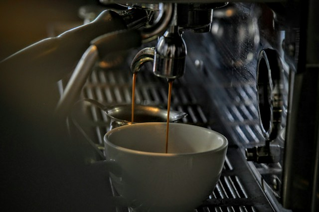

Ayo nongki ke kedai ngupi-ngupi by Atok
kedai ngupi-ngupi adalah tempat yang sangat nyaman untuk bersantai selayaknya warkop pada umumnya dan kedai ngupi-ngupi juga meninggalkan banyak kenangan bagi yang sering datang ke tempat
Pesan Sekarangkedai ngupi-ngupi adalah tempat yang sangat nyaman untuk bersantai selayaknya warkop pada umumnya dan kedai ngupi-ngupi juga meninggalkan banyak kenangan bagi yang sering datang ke tempat
Pesan Sekarang
Kedai Ngupi Ngupi hadir sebagai tempat yang tepat untuk menikmati secangkir kopi dengan suasana yang nyaman dan menyenangkan. Dengan pilihan menu yang menggugah selera serta aroma kopi yang khas, setiap kunjungan menjadi pengalaman tersendiri. Baik untuk bersantai, berbincang bersama teman, maupun melepas penat dari kesibukan sehari-hari, Kedai Ngupi Ngupi siap menemani setiap momen Anda.
Lebih dari sekadar tempat ngopi, Kedai Ngupi Ngupi adalah ruang untuk berbagi cerita, menciptakan kenangan, dan menemukan inspirasi. Kami percaya bahwa momen sederhana bisa menjadi lebih istimewa ketika ditemani kopi yang nikmat dan suasana yang hangat. Jadi, mari mampir ke Kedai Ngupi Ngupi dan temukan pengalaman ngopi yang membuat Anda ingin kembali lagi.
Temukan beragam pilihan menu di Kedai Ngupi Ngupi yang siap menemani setiap suasana dan selera Anda. Mulai dari racikan kopi dengan aroma khas dan cita rasa yang nikmat hingga aneka minuman segar serta hidangan lezat, setiap menu hadir untuk memberikan pengalaman yang menyenangkan di setiap kunjungan.